how to determine if your starting model can be used to test your hypothesis
what to do if your model is misspecified
Validating your starting model
Why do you need to validate your starting model?
As we discussed before “All models are wrong, but some are useful”. So how do you tell if your starting model is a useful one; that is, one that can be used to test your hypothesis?
As discussed in the last section, when you choose your starting model you make an educated guess as to what a useful starting model might be, but you can only validate that it is a useful starting model after you have fit the model to your data.
A useful model is one that reflects the mechanistic understanding of your research hypothesis (the deterministic part of your model - your shape assumption) as well as the nature of your observations (the stochastic part of your model - your error distribution assumption)1.
In addition, a useful model is one that conforms to the assumptions of the method you use to test your model (e.g. GLM). The assumptions of the GLM include that your predictors are not correlated with one another, and that your observations are independent of one another.
In this section, we will explore each of these assumptions by considering if your:
predictors are correlated with one another,
observations are independent of one another,
error distribution assumption was adequate, and
shape distribution assumption was adequate.
By considering these four points, you can determine if your model is “well-specified” to test your hypothesis.
In this section, we will go over tools that will help you determine if your model is well-specified and what to do if you find yourself with a misspecified starting model.
“A well-specified model”
Note that you are trying to find “a well-specified model”. This terminology reflects the fact that more than one model2 is likely appropriate to test your hypothesis.
The role of residuals in validating your model
For your starting model to be valid, it needs to capture the variation in your response explained by the predictors, and it needs to follow the error distribution assumption on which the math for fitting the model was based. We can investigate these characteristics by exploring the model residuals.
Recall that a residual can be defined as3 the difference between the model fitted value and your response observation:
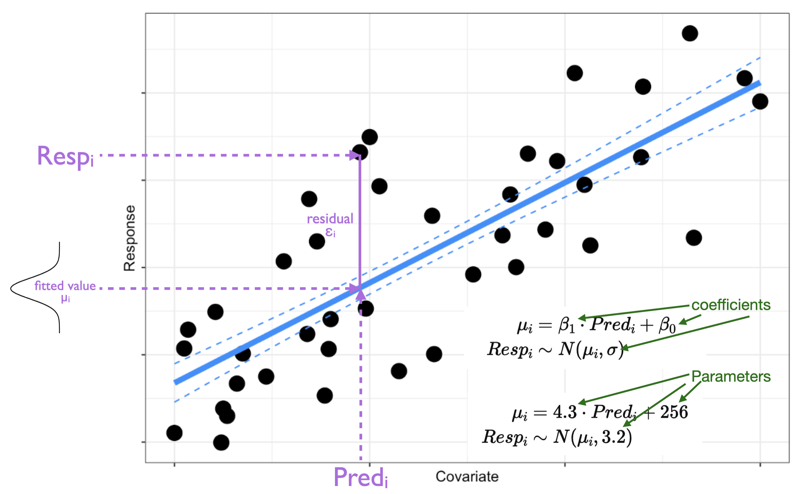
When your model is a useful one (a valid one for testing your hypothesis), these residuals will:
follow the expected error distribution assumption, and
be evenly distributed relative to your model fit and predictors.4
In fact, you can only validate the assumptions you made when picking your starting model after the model is fit because violations show up in the model residuals.
We will be looking at two plots to help us investigate the model residuals.
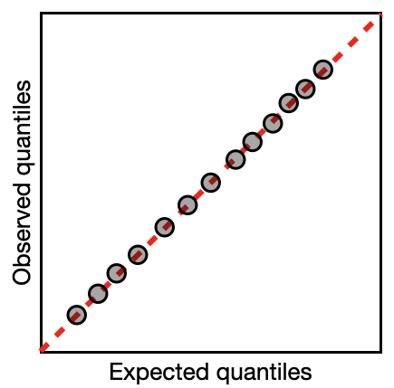
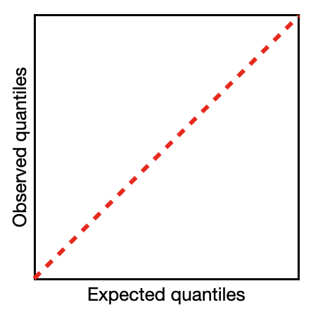
The first is a quantile-quantile (QQ) plot. A reminder from your notes on Data Distributions that a quantile breaks your observations into groups, e.g. the 25% quantile is the value of the variable where 25% of the values are below this value. A quantile-quantile plot compares the position of the quantiles in the expected and observed distribution to see if they come from the same distribution. If they come from the same distribution, the quantiles will match, the points will lie along a 1:1 (red) line on the QQ plot, and your model is valid (like the example on the right).
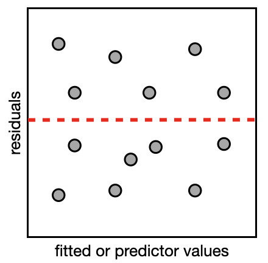
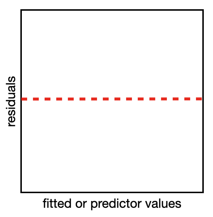
The second is a residual plot. In the residual plot, you will make plots to compare the residuals (on the y-axis) vs. the model fit and each predictor5 (on the x-axis). This will let you see if there are any patterns in the plot which could indicate a violation of your model assumptions. If your model is valid, the points will form a uniform cloud of points in your residual plot (like the example on the right).
You have been looking at residuals as simple differences between your model fit and the observation of your response (as pictured above). The information that you can get from this type of residual will vary with the structure of your model… this can make residual inspection frustrating, as you would have to learn a new method of considering your residuals for each new type of model.
Instead, you will be using a different type of residual to validate your starting model - one that can be interpreted in similar ways whatever your model structure. It is called a scaled residual.
A useful residual - the scaled residual
As mentioned above, inspecting scaled residuals gives us a method of validating our model that is generally applicable - GREAT - but it also is a method that is intuitive: The scaled residual method checks to see if your model is useful (valid) by seeing if it can even produce data that looks like the data you used to fit your model (i.e. your observations). A model that is well-specified will be able to simulate data that looks like the data used to fix it.
We will estimate and explore scaled residuals using functions in the DHARMa package.
DHARMa’s scaled residuals
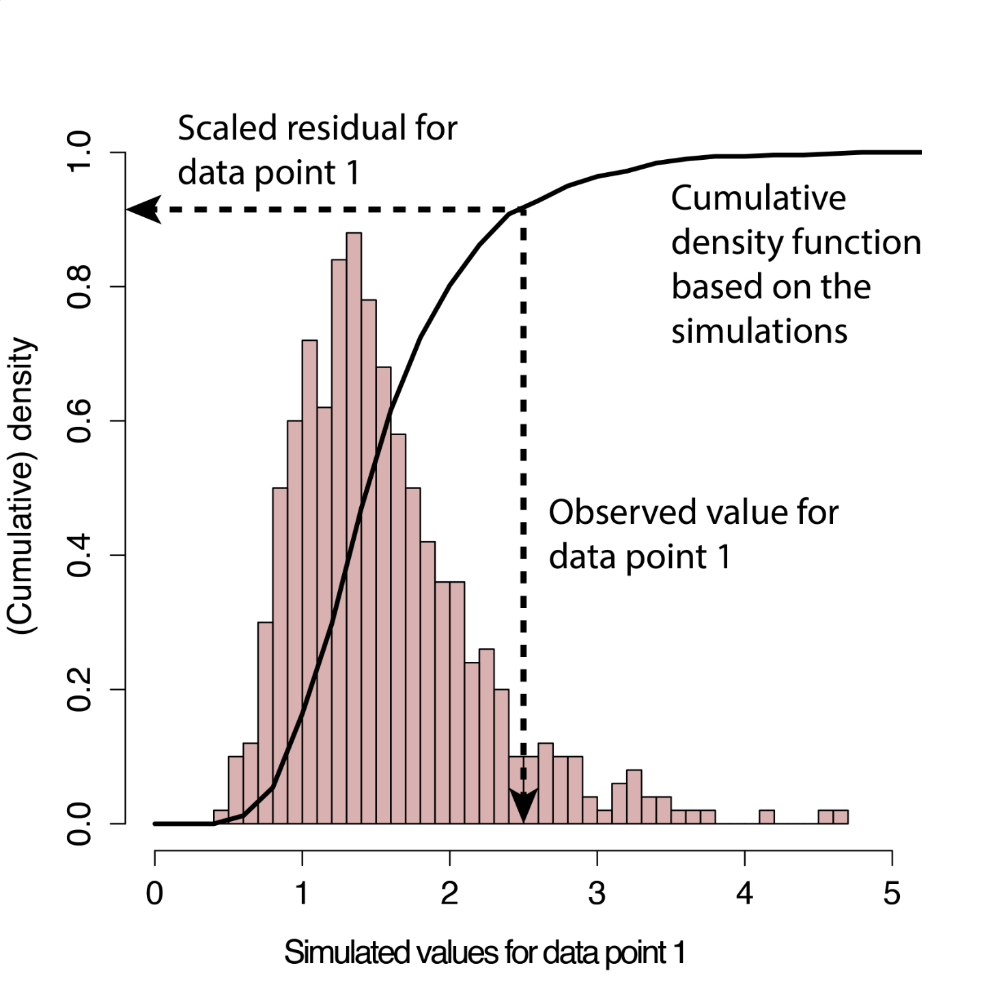
The DHARMa package uses a simulation-based approach to estimate scaled residuals. These scaled residuals are standardized to a uniform distribution regardless of the model structure.
Here’s how it works:
DHARMa uses your starting model to simulate new response data for each observation (each row in your data frame). The default is that it simulates 250 new data sets from your model6.
DHARMa uses the simulated values at each observation to calculate the empirical cumulative density function (ECDF) of the simulated values at that observation.
The scaled residual for observed data point i is then defined as the value of the ECDF at the value of the observed data i (see figure to the right).
Estimated this way, if your model is wellspecified, the scaled residuals will always follow a uniform distribution, regardless of your starting model structure. Put another way: if the observed data were created from the same data-generating process of your starting model, all values of the cumulative distribution should appear with equal probability and the DHARMa residuals will be distributed uniformly.
It will help our discussions to have an example of a starting model. For our example, consider the research hypothesis that your response variable Resp is explained by a categorical predictor (Cat), two continuous predictors (Cont1 and Cont2) as well as the interactions among all predictors. You communicate this as:
In this example, Resp is a positive, continuous variable.
Let us assume you tested this hypothesis by fitting a model with a Gamma error distribution assumption (to reflect the nature of your response variable) and linear shape assumption (to reflect the relationship between each predictor and your response) using a GLM:
startMod<-glm(formula = Resp ~ Cat + Cont1 + Cont2 + Cat:Cont1 + Cat:Cont2 + Cont1:Cont2 + Cat:Cont1:Cont2 +1, # hypothesisdata = myDat, # datafamily =Gamma(link="inverse")) # error distribution assumptionsummary(startMod) # a look into our model object
Call:
glm(formula = Resp ~ Cat + Cont1 + Cont2 + Cat:Cont1 + Cat:Cont2 +
Cont1:Cont2 + Cat:Cont1:Cont2 + 1, family = Gamma(link = "inverse"),
data = myDat)
Deviance Residuals:
Min 1Q Median 3Q Max
-0.44104 -0.09612 -0.01056 0.09491 0.30948
Coefficients:
Estimate Std. Error t value Pr(>|t|)
(Intercept) 1.363e-01 1.827e-02 7.461 3.41e-12 ***
CatTreatment -4.921e-02 2.150e-02 -2.288 0.023260 *
Cont1 -1.514e-03 3.843e-04 -3.940 0.000116 ***
Cont2 -2.615e-03 1.419e-03 -1.843 0.066977 .
CatTreatment:Cont1 4.181e-04 4.515e-04 0.926 0.355643
CatTreatment:Cont2 1.385e-03 1.657e-03 0.835 0.404560
Cont1:Cont2 4.637e-05 2.520e-05 1.840 0.067390 .
CatTreatment:Cont1:Cont2 -2.089e-05 2.978e-05 -0.701 0.483944
---
Signif. codes: 0 '***' 0.001 '**' 0.01 '*' 0.05 '.' 0.1 ' ' 1
(Dispersion parameter for Gamma family taken to be 0.02183205)
Null deviance: 24.1090 on 189 degrees of freedom
Residual deviance: 4.0425 on 182 degrees of freedom
AIC: 994.32
Number of Fisher Scoring iterations: 4
Let us start by estimating the residuals from this starting model using the scaled residual method mentioned above.
library(DHARMa) # load packagesimOut <-simulateResiduals(fittedModel = startMod, n =250) # simulate data from our model n times and calculate residualsmyDat$Resid <- simOut$scaledResiduals # add residuals to data framestr(myDat) # check the structure of the data
The residuals have been added to the data frame as myDat$Resid. We will take a look at these residuals as we walk through the model validation below.
Considering predictor collinearity
What it is:
NOTE: predictor collinearity7 is only a problem if you have multiple predictors in your hypothesis.
Your model assumes that your predictors are not correlated with one another, and that each predictor explains a unique part of the variation in your response. When this assumption is violated, the estimates of the coefficients8 become more uncertain and you are unable to test your hypothesis in a robust way.
Let us use an extreme case to see why this might be a problem:
Imagine you are interested in explaining variability in plant growth (your response is plant growth). You think temperature and water may influence plant growth, so you set up an experiment where you will grow plants under high and low temperature and high and low water (your predictors are temperature and water treatments). But in your experimental set-up you only include two treatments: one where the plants are grown with high temperature and high water, and another where plants are grown with low temperature and low water. In your experiment, your predictors are correlated with one another9. When you try to test your hypothesis, you will not be able to say if the growth differences between treatments is due to differences in temperature or water.
This is an extreme case (where your predictors are 100% correlated with one another), and one that can easily be avoided with a better experimental design. But, predictors that are at least partially correlated with one another are very common in observational/field studies (e.g. things like salinity, temperature and depth in marine studies).
Predictor collinearity causes a problem with our interpretation of our model because it increases the error around the coefficients (modelled effects). This error can be so large, that we are unable to assess the effect of a predictor in explaining the response. This increase in error due to predictor collinearity is called “variance inflation”10.
How you know if you have a problem:
You may have a hunch that you will have a problem with predictor collinearity before you even fit a model. You can identify potential problems by looking at correlations of your predictors with one another.
Here is a helpful bit of code for your investigations, applied to our example model:
library(GGally) # loading GGally packageggpairs(data=myDat) # make a plot of your data - each column vs. another - often called a "pairs plot"
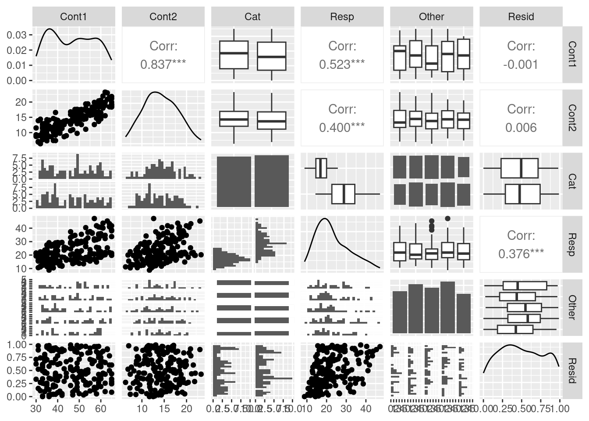
Note in the figure above that there is a linear pattern in the Cont1 vs. Cont2 plot, and that there is a correlation estimate of 0.84 for this predictor pair. This indicates predictor collinearity, and that having both Cont1 and Cont2 in your model may result in variance inflation.
You can also see how much of a problem predictor collinearity is causing by by estimating variance inflation factors (VIFs) after you fit your starting model. VIFs look at your model to see how much correlation among predictors is making your coefficient estimates uncertain.
Note that when you have a categorical predictor that has more than two categories (levels), VIFs need to be calculated in a different way - as generalized VIFs (GVIF)11
In general, when a VIF is greater than 3 (or GVIF is greater than \(\sqrt 3\)), predictor collinearity is influencing your coefficient estimates enough that you may need to take action.
An example of how to estimate VIFs is given in the next section.
What to do if it is a problem:
You can limit the risk of predictor collinearity by carefully planning your experiments to limit predictor correlation as much as possible. If you identify a problem with collinearity, you can:
remove one or more of the offending predictors to remove the problem. Note that removing a predictor will change your research hypothesis.
keep the predictor(s) in but be careful when you interpret the effects estimated by your model.
As is the case with all your choices, the important thing is to be transparent about your process and choices. In a few weeks, we will practice how to communicate the choices and results of your statistical modelling.
# library(car) # load the car package# # vif(startMod.noInt) # estimate VIFs
Note that there are two VIF values higher than the threshold value (in this case VIFs > 3). This means that the presence of both Cont1 and Cont2 in the model is resulting in variance inflation.
Let us remove one of the predictors (Cont2)13 and recalculate the VIFs:
## Recalculating the VIFs# vif(startMod.noInt.noCont2) # estimate VIFs
There are no longer major problems with predictor collinearity, as all VIFs < 3. Let us refit this as our starting model, and recalculate the residuals (as we will need them soon):
## Refitting your starting model with the interactions back in:startMod <-glm(formula = Resp ~ Cat + Cont1 + Cat:Cont1 +1, # hypothesisdata = myDat, # datafamily =Gamma(link ="log")) # error distribution assumptionsummary(startMod) # a look at the model object
Call:
glm(formula = Resp ~ Cat + Cont1 + Cat:Cont1 + 1, family = Gamma(link = "log"),
data = myDat)
Deviance Residuals:
Min 1Q Median 3Q Max
-0.43893 -0.09683 -0.01275 0.08669 0.30657
Coefficients:
Estimate Std. Error t value Pr(>|t|)
(Intercept) 2.073821 0.071662 28.939 < 2e-16 ***
CatTreatment 0.275824 0.098617 2.797 0.00570 **
Cont1 0.015891 0.001480 10.740 < 2e-16 ***
CatTreatment:Cont1 0.005387 0.002053 2.624 0.00942 **
---
Signif. codes: 0 '***' 0.001 '**' 0.01 '*' 0.05 '.' 0.1 ' ' 1
(Dispersion parameter for Gamma family taken to be 0.02151095)
Null deviance: 24.1090 on 189 degrees of freedom
Residual deviance: 4.0505 on 186 degrees of freedom
AIC: 986.69
Number of Fisher Scoring iterations: 4
## Recalculate the residualssimOut <-simulateResiduals(fittedModel = startMod, n =250) # simulate data from our model n times and calculate residualsmyDat$Resid <- simOut$scaledResiduals # add residuals to data frame
Our starting model has now past the first hurdle to being considered wellspecified: no (significant) predictor collinearity.
Considering observation independence
What it is:
Many model fitting methods (including GLMs) assume that the individual observations (e.g. each row in your data frame) are independent from one another. This means that the observations are not correlated (grouped) with one another in any way except as described in the predictors in your hypothesis. If this is true, each individual observation (row) can be called a replicate. When this assumption is violated, and you have observation dependence, it makes the estimate of your coefficients inaccurate, limiting the usefulness of your model.
Here is an example where you want to test the hypothesis that weight change is explained by food consumption (WtChange ~ Food);
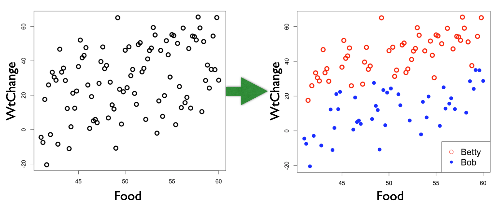
Notice that Observer is not in your research hypothesis, but it is structuring your observations - the observations sampled by Betty are more similar than those sampled by Bob. Without information about Observer, you will have a difficult time fitting the model to your data. Without the information about Observer, the “noise” of unexplained variation is high compared to the “signal” of the effect of Food on WtChange.
How you know if you have a problem:
An easy way to tell if you have a problem is to plot your model residuals vs. any variable you suspect as being a source of dependence among your observations. For example, highlighting Observer in the residuals with the example above:
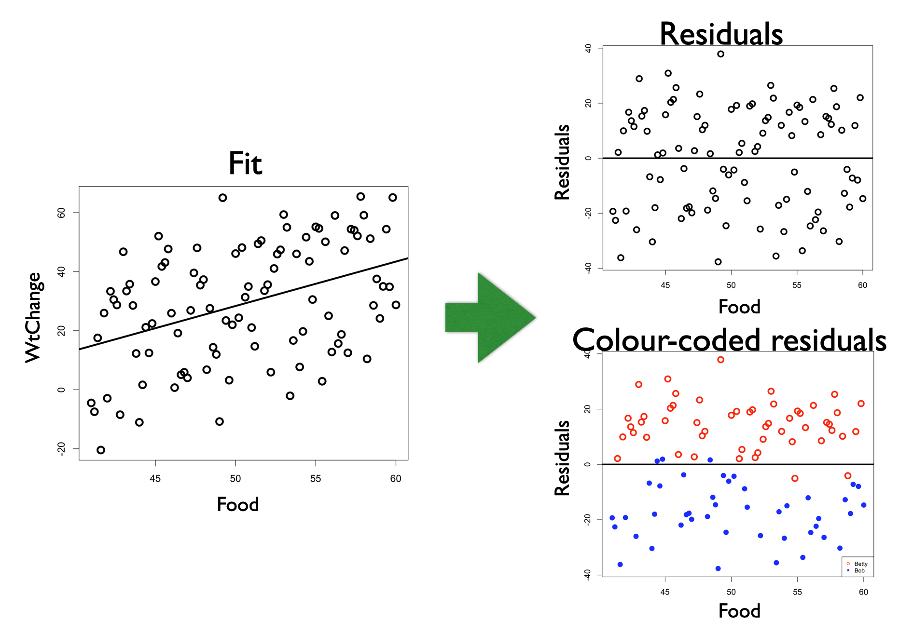
If Observer had no effect on WtChange, we would see no pattern in the colours of the residuals when plotted vs. Observer, but, instead, we see the colour of the residual points grouping together. If you have a dependence problem in your model, you will see the “structure” in the unexplained variability (residuals).
Types of observation dependence and what you can do about them
It is relatively common to find violations of this assumption14. Violations can happen from:
grouping of your observations by a variable not in your hypothesis15
observations that are made at different times (temporal autocorrelation)
observations that are made at different locations (spatial autocorrelation)
Grouping - a missing predictor
Grouping occurs when you have observations dependent on one another due to some other variable not in your hypothesis. This may be a site variable (e.g. garden plots), or a variable that impacts your measurement (e.g. observer, or gear type), or could be related to repeated measurements (e.g. sampling the same individual multiple times).
An example
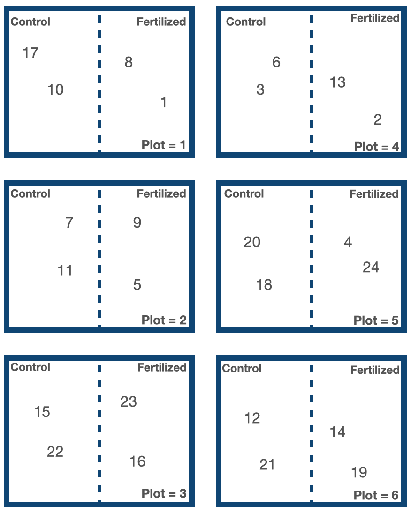
Another example: you might be exploring the effect of added fertilizer on plant height with your hypothesis being Height ~ Fertilizer, with Fertilizer being a categorical predictor with levels of “Fertilized” or “Control”. In making your observations, you measure 24 plant heights growing in a Fertilized or Control site. Oh, and these sites happened to be organized across six experimental plots.
Given your hypothesis that Height ~ Fertilizer, each measurement of plant height will be treated as an individual observation (replicate) with the assumption that, other than the Fertilizer treatment, these observations are independent of one another. However, this assumption is violated as the plants from the same plots may be more similar than plants from different plots (e.g. sunlight differences across plots may influence plant height, or water drainage differences across plots may influence the effect of the fertilizer). The Plot variable may be grouping your observations.
#### How you know if you have a problem with observations dependent based on a grouping variable
You can find out if observation dependence is influencing your model by inspecting the residuals of your starting model. Here, you plot your residuals vs. variables not in your model that may be causing dependence in the observations. If you have a problem with observation dependence, there will be a pattern in your residuals when plotted against the offending variable.
Here is an example of how to do this with our generic example started above. You can see how the residuals differ across levels of the Other variable also in our data set using violin plots:
ggplot()+# start ggplotgeom_violin(data = myDat,mapping =aes(x = Other, y = Resid))+# add observations as a violingeom_point(data = myDat,mapping =aes(x = Other, y = Resid))+# add observations as pointsxlab("Other variable")+# y-axis labelylab("Scaled residual")+# x-axis labellabs(caption ="Figure 3: A comparison of model residuals vs. other variable")+# figure captiontheme_bw()+# change theme of plottheme(plot.caption =element_text(hjust=0)) # move figure legend (caption) to left alignment. Use hjust = 0.5 to align in the center.
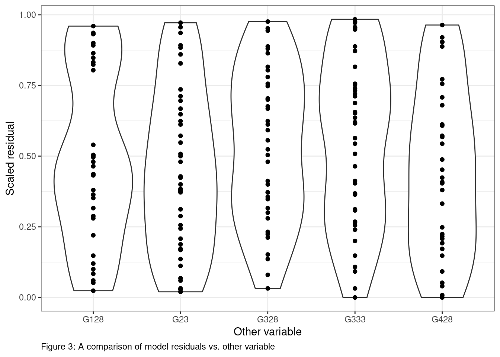
or with a points plot, by colouring the residuals based on the level in Other16:
ggplot()+# start ggplotgeom_point(data = myDat, # the data framemapping =aes(x = Cont1, y = Resid, col = Other), # add observations as pointssize =3)+# change the size of the pointsxlab("Cont1")+# y-axis labelylab("Scaled residual")+# x-axis labellabs(caption ="Figure 3: A comparison of model residuals vs. other variable")+# figure captiontheme_bw()+# change theme of plottheme(plot.caption =element_text(hjust=0)) # move figure legend (caption) to left alignment. Use hjust = 0.5 to align in the center.
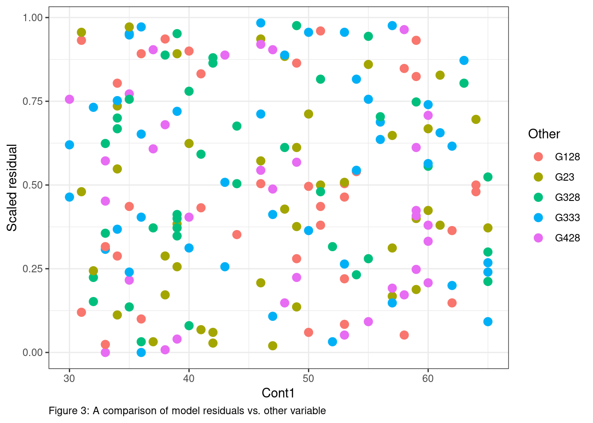
Note that the spread of the residuals in each level (category) of Other is fairly equal in the violin plots and the colours are spread across the points plot. This indicates that Other is not causing much structure in the residuals, and likely is not causing the model to violate the assumption of independence.
Finally, if you quantitative evidence that your observations are dependent on your grouping variable, you can test to see if residuals among the different groups have similar variances. This can be done with a Levene test for the homogeneity of variances through functions in the DHARMa package, e.g.
library(DHARMa) # load packagetestCategorical(simOut, # the residuals catPred = myDat$Other)$homogeneity # the grouping variable of concern
Levene's Test for Homogeneity of Variance (center = median)
Df F value Pr(>F)
group 4 0.1112 0.9785
185
plotResiduals(simulationOutput = simOut, # compare simulated data to form = myDat$Other, # our observationsasFactor =TRUE) # whether the variable plotted is a factor
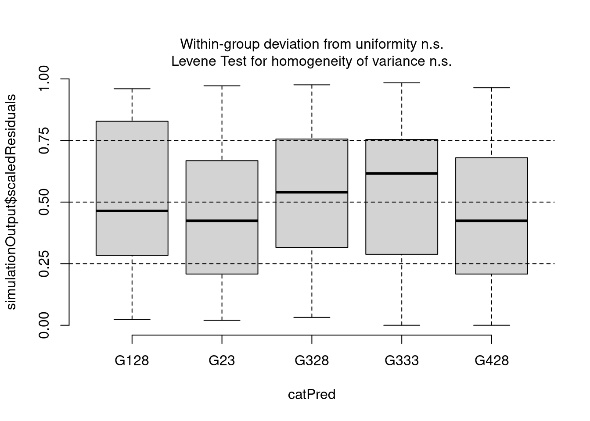
When your P-value is large (as it is here: P = 0.978), you would say that there is no evidence that the residual variance depends on the levels in Other (i.e. no concern for observations being dependent on Other).
What can you do if your observations are grouped by something not in your hypothesis
If you find evidence of observation dependence, you can:
Add the grouping variable to your model as a (fixed effect) predictor: The assumption of observation independence means that your observations are independent of one another in all ways except for the predictors already included in your hypothesis. Therefore, an easy way to address observation dependence is to include the variable in your hypothesis, e.g. changing your original model:
Height ~ Fertilizer + 1
to
Height ~ Fertilizer + Plot + Fertilizer:Plot + 1
would account for variability in plant height that was due to the plants growing in different plots (the main effect of Plot), as well as the influence of plot on the effect fertilizer has on the plants (the interaction Fertilizer:Plot).
Note that adding Plot in this way is adding Plot as a “fixed effect” (vs. “random effect” - more on this below). In fact, every predictor we have been discussing up until now is in our model as something called a fixed effect.
A couple of things to note when you add new fixed effects to your model:
Fixed effects influence the predicted mean of the model prediction, and so they are formerly part of your research hypothesis. This means that your hypothesis changes every time you add or remove a fixed effect. Your original hypothesis was
Height ~ Fertilizer + 1
or that variability in plant height is explained by fertilizer addition. If you add Plot to your hypothesis to deal with observation dependence, your research hypothesis becomes:
Height ~ Fertilizer + Plot + Fertilizer:Plot + 1
or that variability in plant height is explained by fertilizer addition, plot ID and the interaction between the two.
When you add new fixed effects to your hypothesis, your model gets more “expensive” to fit. In the section on Hypothesis Testing, we will discuss how we can quantify the “benefit” of the model (increased explained deviance related to the likelihood of the model) vs. the cost of the model (how many coefficients have to be estimated). Adding new fixed effects increases the cost of fitting your model as more coefficients need to be estimated. This increased cost means you need bigger datasets (more observations) to fit the model. When you add a new continuous predictor to your hypothesis, there is one more coefficient to estimate (in a linear model, this is a slope). When you add a new categorical predictor to your hypothesis, you need to estimate another coefficient for each level in your new predictor. In our example, you would need to estimate 6 - 1 = 517 new coefficients to add the main effect of the Plot variable to the model, and another 6 - 1 = 5 coefficients to add the Fertilizer:Plot interaction to the model.
Both points above (that your hypothesis will change, and that your model will be more expensive to fit) means that just adding your grouping variable to deal with observation dependence is not always a great option. Instead you could,
Add the grouping variable to your model as a random effect using a mixed model: Many turn to mixed modelling as a way to deal with observation dependence. Mixed modelling18 is called “mixed” modelling because it includes a mix of both fixed effects (predictors that influence the model predicted mean) and random effects (predictors that influence the model predicted variance). Fitting mixed models is beyond the scope of this course, but I wanted you to have an idea of what mixed modelling is, and how to get started with mixed modelling, in case you want to use these methods in the future.
To fit mixed models in R, you need to adjust your hypothesis formula to tell R which predictors should be treated as fixed and which should be random. Recall that your model with only fixed effects:
Height ~ Fertilizer + Plot + Fertilizer:Plot + 1
indicates that the predicted mean height is affected by fertilizer, plot ID and the interaction between the two, with separate coefficients associated with each plot ID. In mixed modelling, you could instead include Plot with:
The (1|Plot) term will estimate one (not 5) extra coefficient describing how the variance in average height (the intercept) varies when you move from plot to plot. The (Fertilizer|Plot) term will estimate one (not 5) extra coefficient describing how the variance in the effect of the fertilizer varies by plot.
So mixed modelling offers a way to address dependence in your observations that does not change your research hypothesis (as you are not adding fixed effects) and is cheaper (requiring less coefficient estimates as the random effects influence the modelled variance, not the mean).
You can fit mixed models in the lme4 package using the glmer() function (which stands for Generalized Linear Mixed Effects Models, or GLMM), with syntax that is very similar to what we have been using for GLMs, e.g.
One final thing to note is that random effects will always be categorical. If you have a continuous variable that is causing dependence in your observations, this variable can not be included as a random effect and must be included as a fixed effect.
Here is a table if you are trying to determine if a variable causing dependence in your model should be included as a fixed or random effect:
Your situation
Your choice
- the variable causing dependence is continuous - if you are interested in effect sizes of the variable on your response - if the factor levels are informative (vs. just numeric labels)
fixed effect
- the levels in the variable are only samples from a population of levels - if you have enough levels (at least 5) to estimate the variance of the effect due to your variable
random effect
(adapted from Crawley2013TheRBook)
Temporal autocorrelation
Temporal autocorrelation occurs when you measure your observations at different points in time.
Observations collected closer together in time will be more similar than those collected further apart in time, and this could be happening independent of the mechanisms underlying your hypothesis. This topic is beyond the scope of this course, but I add a short description here so the idea is “on your radar” as you move forward in biology.
An example
Suppose you want to test the hypothesis that variability in growth rate of newly hatched cod (torsk) in the Kattegat is explained by prey availability (Growth ~ Prey). The observations you are using to test this hypothesis have been collected over ~15 years, and it is likely that measurements made closer to each other in time are more similar than those made further apart from each other in time. This may be because the physical or biological environment was more similar in years that are close to each other in time (e.g. the parent population was similar, the temperature was similar) However, there is nothing in your hypothesis (Growth ~ Prey) to let R know which observations are close to each other in time. Thus, you violate the assumption of observation independence.
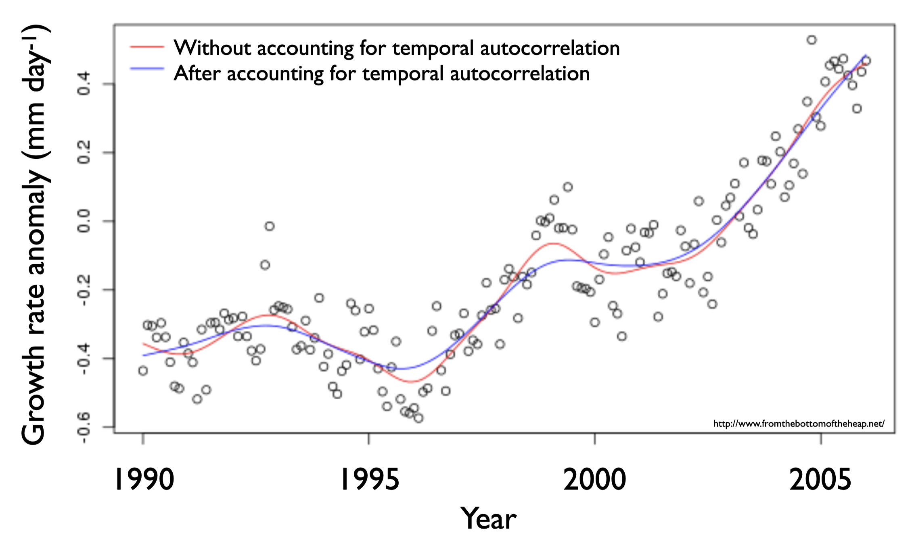
When a model is fit to data and the observations are dependent on their sampling time, similar values closer in time are given too much weight on the model coefficients and the model fit is biased (compare lines in the plot on the right).
How you know if you have a problem with temporal autocorrelation
You can find out if observation dependence due to temporal autocorrelation is influencing your model by plotting your model residuals vs. time. If you have a problem with observation dependence, there will be a pattern in your residuals when plotted against the offending variable - in this case time.
You can also determine how large the problem of temporal autocorrelation is by estimating the autocorrelation function19 and the Durbin-Watson test. An easy way to test the latter is with the testTemporalAutocorrelation() function in the DHARMa package.
What you do if your observations are influenced by temporal autocorrelation
As above, the assumption of observation independence means that your observations are independent of one another in all ways except for the predictors included in your hypothesis. We need to tell R about this temporal dependence in your model. This can be done by including time as a predictor in your model. Note that time will need to be a fixed effect as it is continuous, and will need to be modelled with a non-linear shape assumption20 to deal with the complicated form of the temporal autocorrelation.
Alternatively, you can tell R about the correlation structure of the data directly (i.e. how similarity in observations changes as observations are further and further away from each other).
### Spatial autocorrelation
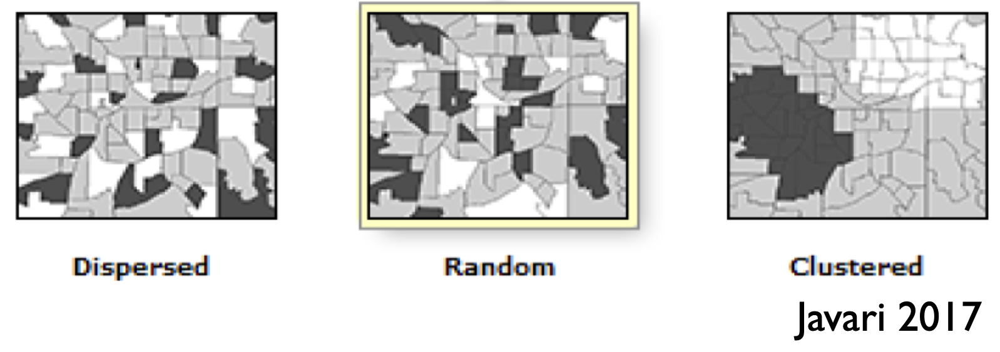
Similar to the previous section, spatial autocorrelation describes the dependence among observations that are collected at different spatial locations. Observations measured close to each other in space are more (or less!) likely to be similar to one another than those measured further apart. In the plot on the right you can see examples of observation dependence on space in the dispersed and clustered drawings. In the dispersed example, observations closer to each other in space are less likely to resemble each other than one would expect if observations were distributed randomly in space (random example). In the clustered example, observations closer to each other in space are more likely to resemble each other than one would expect if observations were distributed randomly in space.
#### An example
For example, you might be interested in how abundance of a species changes with mean environmental temperature and intend on testing the hypothesis that Abundance ~ Temperature. Measuring abundance over a large spatial area, you find that observations made closer to each other in space are more similar than those measured farther apart and part of this is due to effects other than temperature (e.g. other aspects of the environment such as food availability are more similar to each other for sites that are closer together). Without telling R information about where in space the observations were collected (remember, the hypothesis only includes Temperature), you violate the assumption of observation independence.
How you know if you have a problem with spatial autocorrelation
You can find out if observation dependence due to spatial autocorrelation is influencing your modelling by plotting your model residuals vs. location. As location is measured in two dimensions, you could try a bubble plot21 or variogram22 to help you look for patterns in your residuals with space. You can also estimate how big the problem of spatial autocorrelation is with Moran’s I test. The last can be done with the testSpatialAutocorrelation() function in the DHARMa package.
What you do if your observations are influenced by spatial autocorrelation
Similarly to our discussion about temporal autocorrelation, the location of the observations (e.g. latitude and longitude) can be included in your model to account for the spatial autocorrelation23. Alternatively, the dependence among observations due to proximity can be included in the model as a spatial autocorrelation structure.
A final point about observation independence
Remember that you only have to worry about your observations being dependent based on variables not already in your hypothesis.
Considering your error distribution assumption
What it is:
The error distribution (i.e. distribution of your residuals) needs to match the assumption you made when you chose your starting model. If this assumption is violated, the estimates of your coefficients will be less accurate, limiting your ability to use the model to test your hypothesis and make predictions.
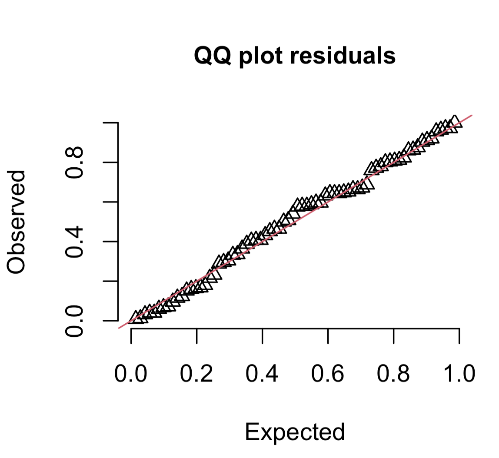 How do you know if you have a problem:
You can compare the error distribution of your residuals with the distribution you expect given your error distribution assumption through something called a Q-Q plot. A Q-Q plot - or quantile-quantile plot - plots the two data distributions against each other via their quantiles24. When the expected and observed error distributions are in agreement, the points will fall along the red diagonal line in the Q-Q plot (the 1:1 line). You can also help your interpretation of this by null hypothesis goodness of fits tests (more on this below).
The scaled residuals method introduced above will allow you to consider the behaviour of your residuals in a similar way regardless of the structure of your model. You can get a Q-Q plot of your residuals with:
# Consider your error distribution assumption by inspecting observed vs. expected residuals:plotQQunif(simOut, # the object made when estimating the scaled residuals. See section 2.1 abovetestUniformity =TRUE, # testing the distribution of the residuals testOutliers =TRUE, # testing the presence of outlierstestDispersion =TRUE) # testing the dispersion of the distribution
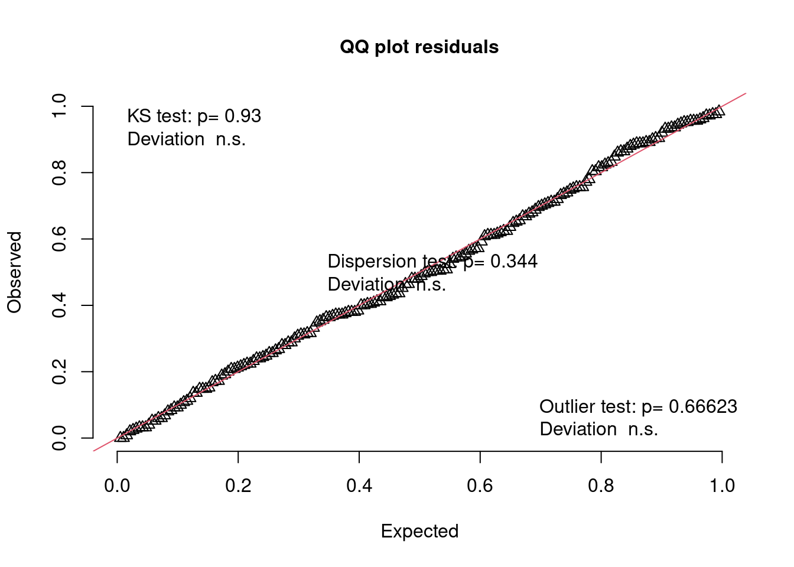
Note that the plot is the observed vs. expected scaled residuals. As above, the triangular points will follow the red line in a well-specified model. You will generally access this by eye, but the DHARMa package also includes three null hypothesis tests that give you more information about the behaviour of your residuals relative to the expected behaviour. In all cases, a low P-value (traditionally P < 0.05) means that there is evidence that the null hypothesis can be rejected (and your error distribution assumption is not valid).25
The tests are:
KS test: The Kolmogorov-Smirnov test tests the null hypothesis that the distribution of your residuals is similar to the expected distribution (here, a uniform distribution). A low P-value means there is evidence that the observed residuals are different than expected, and your error distribution assumption is not valid. You can also access this test directly with the testUniformity() function in the DHARMa package.
Dispersion test: This Dispersion test tests the null hypothesis that the dispersion of your residuals is similar to the expected dispersion. A low P-value means there is evidence that the observed dispersion is different than expected, and that your error distribution assumption is not valid. You can also access this test directly with the testDispersion() function in the DHARMa package.
Outlier test: This Outlier test tests the null hypothesis that the number of outliers in your observed residuals is similar to the expected number. A low P-value means there is evidence that you have outliers. You can also access this test directly with the testOutliers() function in the DHARMa package. You can also find the position (row number) of the outliers with the outliers() function (also in the DHARMa package).
What to do if it is a problem:.
Here are two examples (from the DHARMA package vignette) of Q-Q plots where the error distribution assumption is not met:
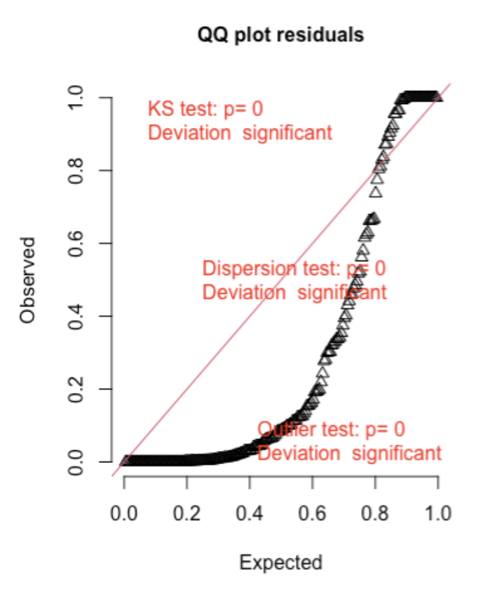 First, here is an example of overdispersion, where there are too many residuals in the tails of the distribution and not enough in the middle of the distribution when compared to the expected:26
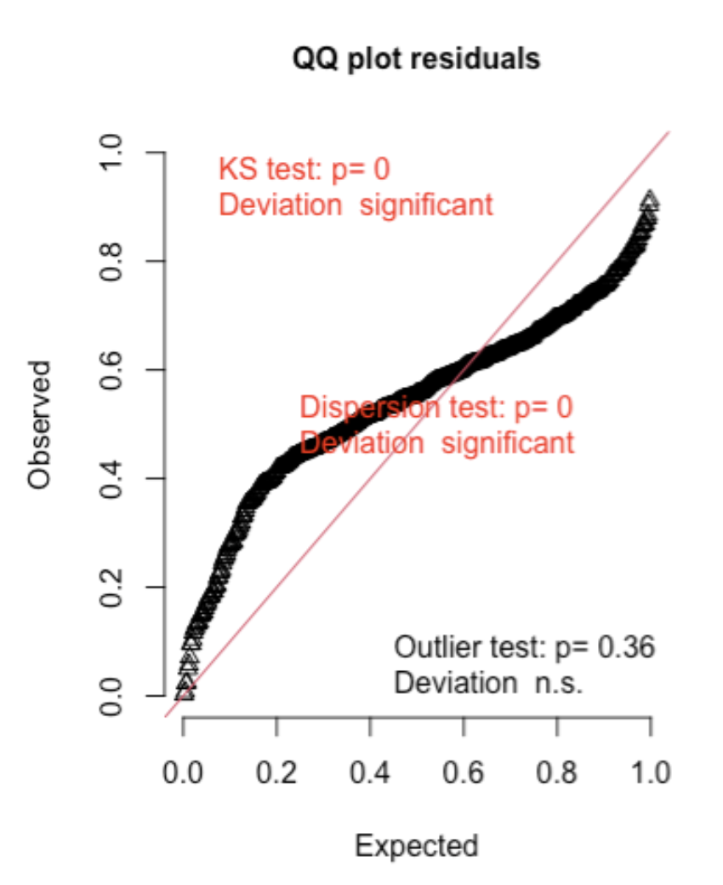 Second, here is an example of underdispersion, where there are too many residuals in the middle of the distribution and not enough in the tails of the distribution when compared to the expected:
If your model residuals are not behaving as expected, you should first address any outlier problems. Explore the observations labelled as outliers and see if they should be kept in your data set.
Once you have explored outliers, if you still have residuals not behaving as expected, you can change your error distribution assumption and refit your starting model. This may mean you change the link function you used to fit the model. The link function we have been using is always the default link function - which you can see at the help file with ?family, but there are alternative link functions which can be used to help models that appear misspecified. We will be discussing this in class.
Alternatively, you can try changing the actual assumption (e.g. trying a normal distribution instead of a Gamma distribution). Note that with some types of response data (e.g. continuous) you have a number of different error distribution assumptions you can try (e.g. Gamma vs. normal), while others (e.g. binomial, presence/absence, etc.) are more limited.
In all cases, you will refit your model with the new assumption choice and re-validate that new model, as described here. There will be times where you have tried everything and you still have evidence that your model is misspecified. In these cases, look at the magnitude of the violation.
If the violation appears minor (e.g. only a minor pattern in your residuals), your model may still be useable. In such cases communicate the issue in your model validation assessment along with your attempts to correct it, and proceed with your hypothesis testing with a cautious eye. We will discuss how to do this in class.
If the violation appears major, you may need to move on to another method (e.g. random forest or Bayesian design) that can help you design a more customized model to your situation.
Considering your shape assumption
What it is:
You made an assumption about the shape of the relationship between your response and each predictor (e.g. a linear shape assumption). You need to make sure that the assumption you made was useful before you can have the confidence in your coefficient estimates needed to proceed with the hypothesis testing.
How do you know if you have a problem:
For this assumption, you need to look at how your residuals are scattered around your model fit. If your model is a useful one (“wellspecified”), the scatter of those residuals will be even and uniform around the fit (“a uniform cloud”). You can inspect your residuals in this way by plotting the residuals vs. the fitted values.
Here is code for this using the DHARMa package:
plotResiduals(simOut, # the object made when estimating the scaled residuals. See section 2.1 aboveform =NULL) # the variable against which to plot the residuals. When form = NULL, we see the residuals vs. fitted values
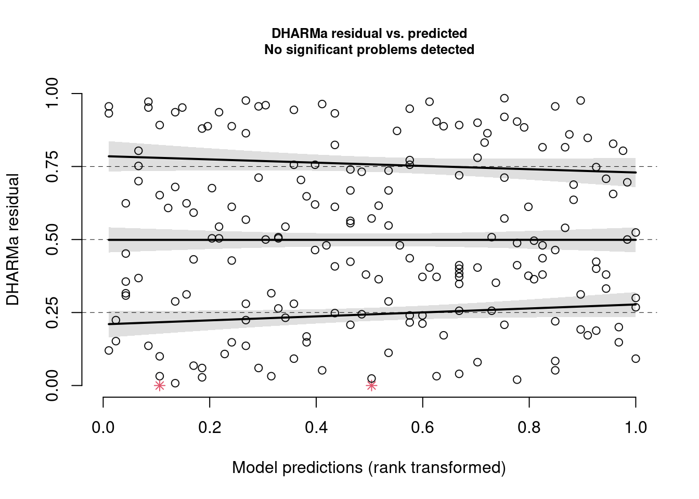
This gives a plot of the scaled residual (“DHARMa residual”) vs. the fitted values (“Model predictions”). Any simulation outliers (data points that are outside the range of simulated values) are highlighted as red stars. You can use the testOutliers() and outliers() function in the DHARMa package to learn more about outliers.
Again, you are looking for a uniform cloud of points. To help you assess the uniformity of the cloud, R adds quantile regression results: The three solid lines (called splines) are fit through the 0.25, 0.5 and 0.75 quantiles of the residual distribution. Quantile regression compares the empirical 0.25, 0.5 and 0.75 quantiles of the residuals (solid lines) with the theoretical 0.25, 0.5 and 0.75 quantiles (dashed line), These lines are then compared with a quantile test that tests the null hypothesis that these splines are not different than the dashed horizontal lines. If the null hypothesis of this is rejected, the curves will appear red in the figure, and you can determine your shape assumption was not valid.
You should always inspect a plot of residuals vs. fitted values to explore your shape assumption. If you have multiple predictors in your model, you should also plot the residuals vs. each predictor to make sure the shape you chose for each relationship is useful. Here are the residuals of our example model vs. the Cont1 predictor:
plotResiduals(simOut, # the object made when estimating the scaled residuals. See section 2.1 aboveform = myDat$Cont1) # the variable against which to plot the residuals. When form = NULL, we see the residuals vs. fitted values
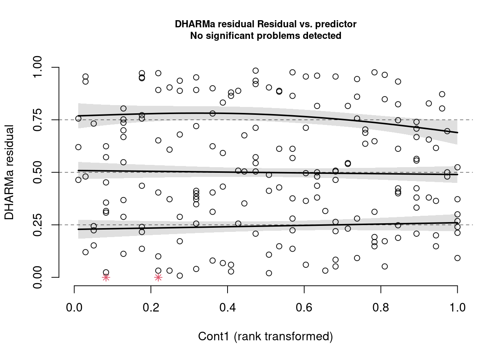
and vs. the Cat predictor:
plotResiduals(simOut, # the object made when estimating the scaled residuals. See section 2.1 aboveform = myDat$Cat) # the variable against which to plot the residuals. When form = NULL, we see the residuals vs. fitted values
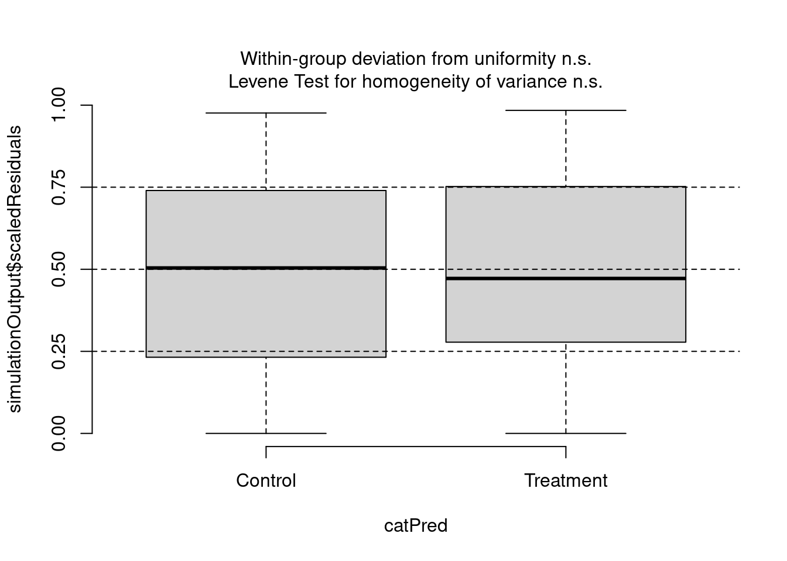
In this last figure, you get boxplots showing the distribution of the residuals - one for each level of your categorical predictor. This different picture is because the predictor Cat is categorical. Instead of a uniform cloud, you look for boxplots that spread across the 0.25 and 0.75 quantiles. If the spread is wide and even across the levels of your categorical predictor, you have evidence the model is wellspecified to test your hypothesis.
What to do if it is a problem:
Here is an example of a residual plot when you have a violation in your shape assumption27:
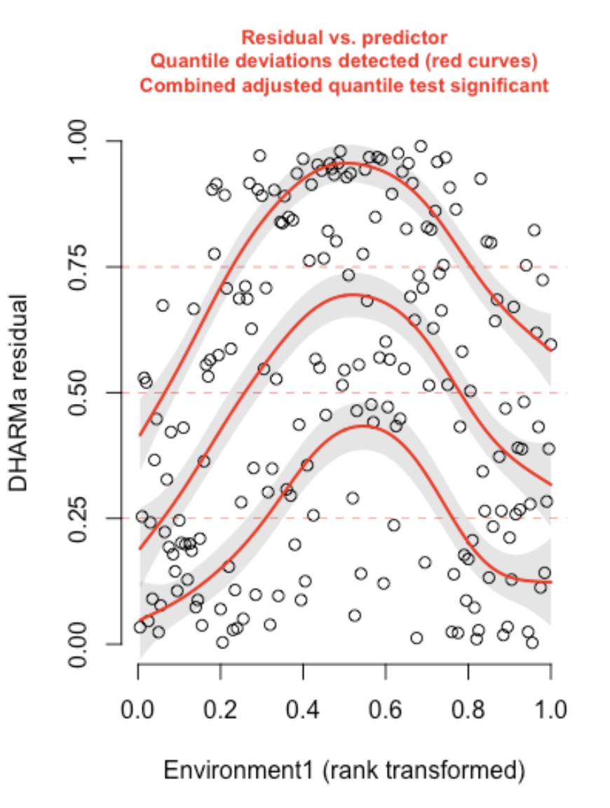
In this case, the predictor Environment1 was fit with an assumption of a linear relationship with the response, when a non-linear shape assumption was needed. Note that you can also access the quantile test used to flag shape assumption violations with the testQuantiles() function in the DHARMa package.
If you find a pattern in your residuals that indicates a violation of your shape assumption, you can change your assumption and refit your model. This may mean changing the shape of the model (e.g. from linear to non-linear) and/or including an interaction in your model.
In all cases, you will refit your model with the new assumption choice and re-validate that the model is useful following the steps in this section.
A final thought
As you can see, validating your starting model will sometimes lead you to make changes to your starting model that require you to refit your starting model and re-validate the new model It can feel a bit like you are walking in circles, but rest assured that this is very normal. And necessary: you can’t go further to test your hypothesis until you are confident you have a useful model.
Up next
In the next section, we will discuss how you can use your validated model to test your hypothesis. Finally: the science!
Footnotes
see course notes from last week if this is unclear↩︎
notice I say “can be defined as…”. This is because there are many different definitions of a residual that have been made to deal with different model structures. We are going to use a very useful one - the scaled residuals - that will let you explore residuals for a wide range of models. More on this below!↩︎
including those predictors inside your model, and possible predictors not included in your model. More on this to come!↩︎
including those predictors inside your model, and possible predictors not included in your model. More on this to come!↩︎
remember, these are the modelled effects of your predictors on your response↩︎
your predictors are so correlated, in fact, we say they are “aliased” with one another↩︎
the error (variance) around the coefficient estimates is getting bigger (inflation)↩︎
the function we will use to calculate this will choose the correct estimate - either VIF or GVIF - depending on your model.↩︎
the model can not have interactions when estimating VIFs because an interaction term will always be correlated with the main effect predictor terms involved in the interaction. Ask in class if you have questions about this.↩︎
in your own work, you will choose the predictor to remove based on your study goals and particular situation↩︎
A quantile defines a particular part of a data set, e.g. the 90% quantile indicates the value where 90% of the values are less than the 90% quantile value. See your notes DSPH_SM_DataDistributions.html for more↩︎
“Deviation n.s.” on the plot means that there is no significant deviation from expected↩︎
Note that zero-inflated data (more zeroes than expected) appears similarly↩︎